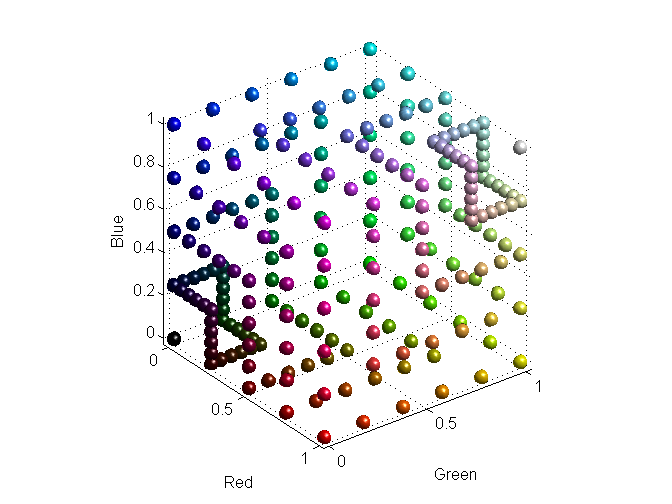
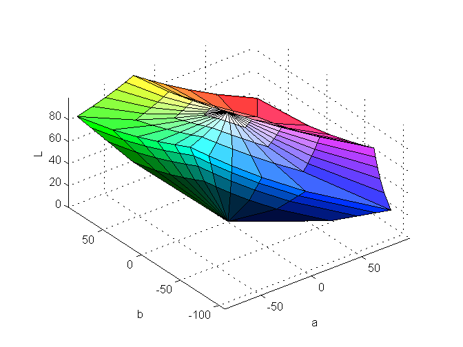
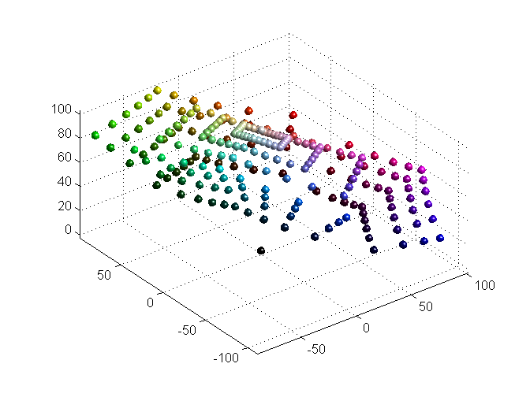
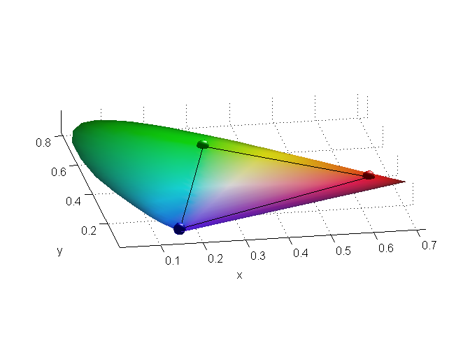
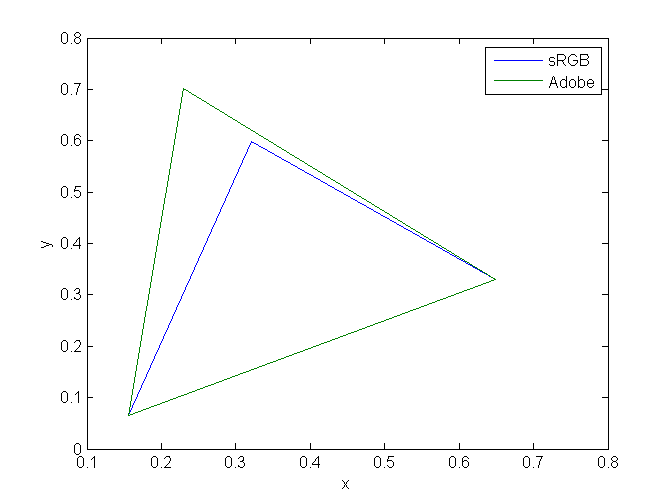

OPTPROP, a color properties toolbox
OptProp is a MATLAB toolbox for calculation and examination of color related optical properties. It is has a functional pipelined design, in that:
- except for ASTM tables, lookup tables are avoided
- a conversion is carried out in one single call
- the output can directly be used as input to other conversion routines
This makes it a good tool for short command line conversions and tryouts, since functionality is localized. Another advantage of this approach is that users can verify the routines by comparing the source code to current standards definitions.
OptProp was written by Jerker Wågberg, More Research & DPC, Sweden
Contents
- Arguments in the OPTPROP toolbox
- Preferred arguments
- Generate the surface of an RGB-cube
- View the RGB cube as a solid
- Transform to XYZ and display
- View as a solid.
- Transform into LAB and view as solid
- Enclose in Rösch color solid for reference
- View as data points in Lab space
- Show RGB as chromaticity coordinates
- Show the difference between sRGB and Adobe RGB
- Show Macbeth ColorChecker
- Show errors in Bradford adaptation
- Image Processing Toolbox comparsion
The Matlab source of this demo is available as optpropdemo_src.m and can be executed, preferably in Cell Mode.
NOTE: In the end of this demo, there a comparison between OptProp and Image Processing Toolbox, IPT. Of course, this comparison can not be executed if IPT is not loaded and will render an error.
However, this file is the only file that refers to IPT and all other OptProp functions are completely independent of IPT.
Arguments in the OPTPROP toolbox
Many functions within the OPTPROP toolbox have a similar flexible way of dealing with arguments. If a function expects multi-dimensional input, such as e.g. Lab or XYZ, these three dimensions can either be entered individually or as the last dimension in a single variable. In the same manner, the output can be delivered in one variable or in separate variables.
For example: A single XYZ triplet can be converted to Lab by
[L,a,b]=xyz2lab(50,25,45);
The result is delivered as three scalars in the variables L, a and b. If we now define
X=50; Y=25; Z=45;
and finally
XYZ=[X,Y,Z];
the following four conversions are congruent:
[L,a,b]=xyz2lab(X,Y,Z)
L = 57.0754 a = 88.9817 b = -23.7103
[L,a,b]=xyz2lab(XYZ)
L = 57.0754 a = 88.9817 b = -23.7103
Lab=xyz2lab(X,Y,Z)
Lab = 57.0754 88.9817 -23.7103
Lab=xyz2lab(XYZ)
Lab = 57.0754 88.9817 -23.7103
The dimensionality of input arguments, except for the last, is always preserved. For example, a Macbeth Colorchecker is organized as four rows and six columns. The OptProp function colorchecker returns the spectra for such a chart in a 4x6x31 matrix
size(colorchecker)
ans =
4 6 31
The last dimension reflects the wavelengths in steps of ten from 400 nm to 700 nm. When converting these spectra to Lab by
Lab=roo2lab(colorchecker);
Lab gets the size
size(Lab)
ans =
4 6 3
where Lab(:,:,1) holds the L-values, Lab(:,:,2) the a-values and finally L(:,:,3) the b-values.
As before, it is also possible to direct the output into three separate variables:
[L,a,b]=roo2lab(colorchecker); whos L a b
Name Size Bytes Class Attributes L 4x6 192 double a 4x6 192 double b 4x6 192 double
Preferred arguments
Many conversion routines in OptProp have one or more default arguments. In the previous example, xyz2lab, the routine needs to know the illuminant and observer to perform the conversion. The full command line is therefore:
xyz2lab(XYZ,'D50/2')
ans = 57.0754 86.7192 -37.4056
When the 'D50/2' argument is missing, xyz2lab takes this argument from
optgetpref('cwf')
D65/10
where cwf stands for color weighting function. To convert using another illuminant/observer pair, say 'D65/10', one can enter it as
xyz2lab(XYZ,'D65/10')
ans = 57.0754 88.9817 -23.7103
or set 'D65/10' as the new preferred illuminant/observer by
optsetpref('cwf','D65/10')
and then issue the command without cwf argument:
xyz2lab(XYZ)
ans = 57.0754 88.9817 -23.7103
What follows are some examples of the conversions and graphics that are available within OptProp.
Generate the surface of an RGB-cube
rgb=addmix(5,5); ballplot(rgb,rgb); camorbit(90,0); camlight; lighting phong xlabel('Red');ylabel('Green'); zlabel('Blue');
View the RGB cube as a solid
viewgamut(rgb,rgb, 'EdgeColor', [0 0 0]);
camorbit(90,0);

Transform to XYZ and display
% Use GAMMA=1, so that the RGB values are % evenly distributed in XYZ-space also xyz=rgb2xyz(rgb,'srgb','Gamma', 1); ballplot(xyz,rgb); camorbit(90,0); camlight; lighting phong xlabel('X');ylabel('Y'); zlabel('Z');

View as a solid.
Note that the volume is a perfect parallelepiped wich is a direct consequence of the linear conversion between RGB and XYZ.
h=viewgamut(xyz,rgb, 'EdgeColor', [0 0 0]); camorbit(90,0); xlabel('X');ylabel('Y'); zlabel('Z');

Transform into LAB and view as solid
lab=xyz2lab(xyz); h=viewlab(lab,rgb,'EdgeColor', [0 0 0]); xlabel('a');ylabel('b'); zlabel('L');
Enclose in Rösch color solid for reference
rlab=roo2lab(rosch); hold on hr=viewlab(rlab); hold off alpha(hr,.5); axis tight

View as data points in Lab space
ballplot(lab(:,:,[2 3 1]),rgb);
lighting phong
camlight
 Show RGB as chromaticity coordinates
% Only use the pure RGB colors rgb=cat(3,[1 0 0], [0 1 0], [0 0 1]); xyz=rgb2xyz(rgb,'srgb','D65/10'); xy=xyz2xy(xyz); ballplot(xy(:,:,1),xy(:,:,2),zeros(size(xy(:,:,1))),rgb); hold on % Make it a closed curve xyl=cat(2,xy,xy(:,1,:)); plot3(xyl(:,:,1),xyl(:,:,2),zeros(size(xyl(:,:,1))),'-k'); %Display a Helmoltz horseshoe for reference helmholtz; hold off axis auto % Make it more exciting... lighting phong;camlight camorbit(-10,-70) set(gca,'ztick',[]); xlabel('x');ylabel('y')
Show the difference between sRGB and Adobe RGB
rgb=cat(3,[1 0 0], [0 1 0], [0 0 1]); xyz=[rgb2xyz(rgb,'srgb','D50/2'); rgb2xyz(rgb,'adobe','D50/2')]; xy=xyz2xy(xyz); xyl=cat(2,xy,xy(:,1,:)); plot(xyl(:,:,1)',xyl(:,:,2)'); xlabel('x');ylabel('y') legend('sRGB', 'Adobe');
Show Macbeth ColorChecker
ColorChecker returns spectral readings for a Macbeth ColorChecker
r=colorchecker;
rgb=roo2rgb(r);
optimage(rgb);
axis off

Show errors in Bradford adaptation
Visualize the errors in the Bradford adaptation when adapting the ColorChecker Lab readings from D65/10 to A/2
% Start with calculating 'true' Lab based on spectra dlab=roo2lab(r,'D65/10'); lab=roo2lab(r,'A/2'); % Now calculate Lab(A/2) based on Lab(D65/10) Alab=lab2lab(dlab,'D65/10','A/2','cat','bradford'); DeltaE=de(lab,Alab); % Display as colored bar chart bar3c(DeltaE,rgb)

Image Processing Toolbox comparsion
MathWork's Image Processing Toolbox and OptProp have some conversions in common. We can compare the two by e.g. do the same sRGB to Lab conversion.
First create a one megabyte image and prepare IPT for a conversion:
rgb=rand(1024,1024,3);
C=makecform('srgb2lab');
First do a conversion round without timing, so we don't measure the time used for compilation.
lab=rgb2lab(rgb,'srgb','D50/2'); lab=applycform(rgb,C);
Now time conversion with OptProp:
tic;lab=rgb2lab(rgb,'srgb','D50/2');toc
Elapsed time is 7.632448 seconds.
and with IPT
tic;lab=applycform(rgb,C);toc
Elapsed time is 7.469732 seconds.
IPT is most often, depending on the input data, somewhat faster due to its use of lookup tables for gamma calculations.
Now compare the numerical results when converting a MacBeth ColorChecker chart:
rgb=roo2rgb(colorchecker); labopt=rgb2lab(rgb,'srgb','D50/2'); labipt=applycform(rgb,C);
Compare by using DeltaE
bar3c(de(labopt,labipt),rgb)

Considering the IPT's use of lookup tables, IPT and OptProp seems to calculate the same.